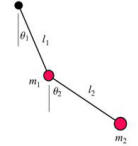

The Double Pendulum model displays the motion of a double pendulum and its Poincare map. A double pendulum is a pendulum with another pendulum attached to its end and the state of this dynamical system is specified by two angles and two angular velocities. Because there is no fiction, the double pendulum is an example of a Hamiltonian system and energy is conserved. This EJS model simplifies the system by using equal length arms and masses. A Cash-Karp fifth order ODE solver is used to compute the motion.

The double pendulum provides an ideal system in which to study periodic, quasiperiodic, and chaotic motion. The simulation allows for the initial energy and orientation of each pendulum to be set using input fields or by dragging either pendulum bob. A 2D Poincare section is easily constructed by plotting the top angle θ1 and angular velocity ω1 when the bottom pendulum's angle θ2 changes from negative to positive. These three variables completely specify the state of the system because conservation of energy determines the fourth dynamical variable ω2. Clicking in the Poincare section sets the initial conditions of the pendulum and changes the color of the points in the Poincare section.
The Double Pendulum Model was created by Daniel Hampton and Wolfgang Christian using the Easy Java Simulations (EJS) version 4.2 authoring and modeling tool.
You can examine and modify a compiled EJS model if you run the model (double click on the model's jar file), right-click within a plot, and select "Open EJS Model" from the pop-up menu. You must, of course, have EJS installed on your computer. Information about EJS is available at: <http://www.um.es/fem/Ejs/> and in the OSP comPADRE collection <http://www.compadre.org/OSP/>.